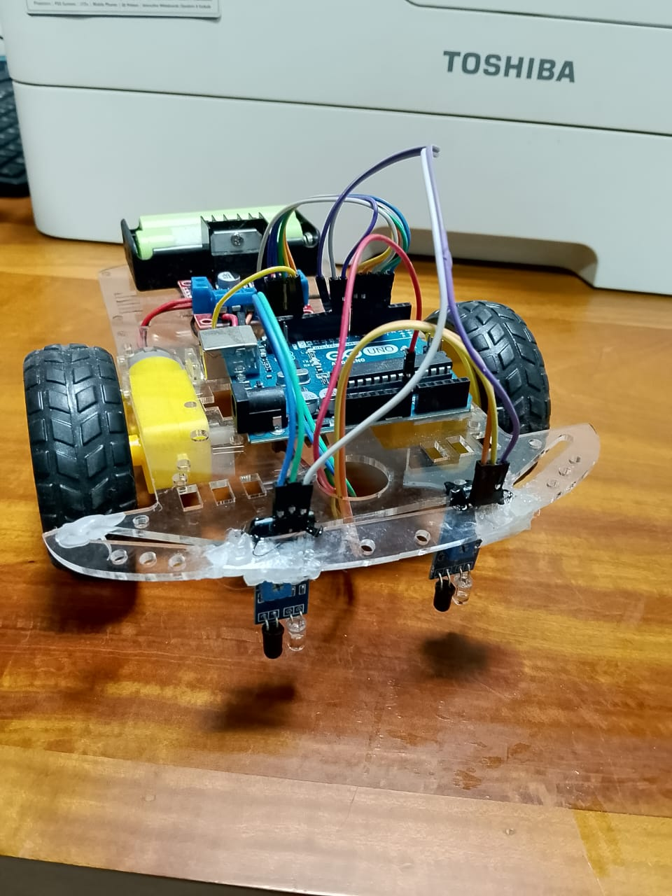
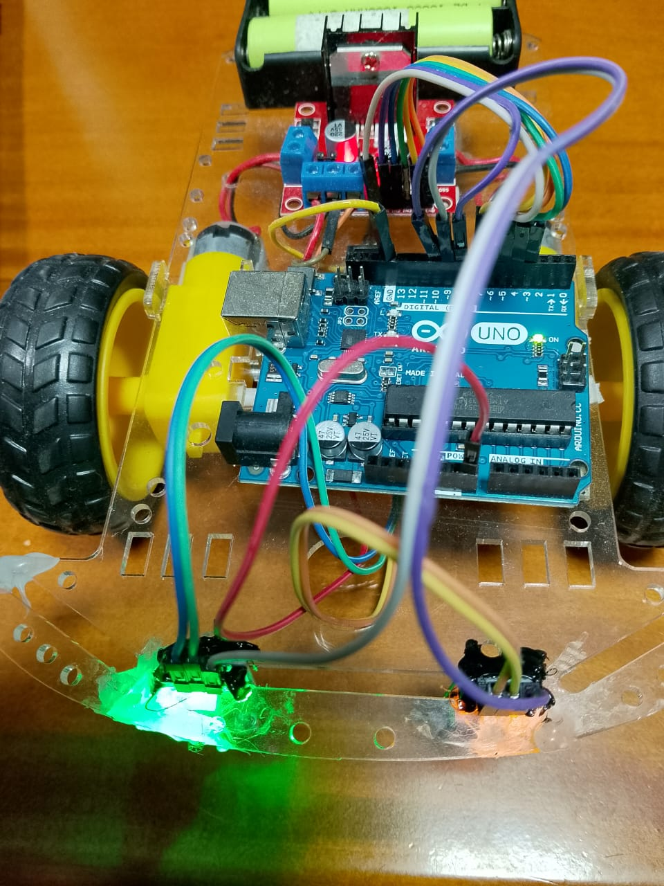

ROBOTICS
2024
Line Following Robot (4 IR Sensors)
A compact line following robot built using Arduino, a motor driver, and 4 IR sensors. The robot detects the line position and adjusts the wheel speeds to follow smoothly on curves and straight paths.
Arduino
4× IR Sensors
Motor Driver
DC Motors
Control Logic
Key Features
- 4-sensor line detection for better stability and curve handling.
- Motor speed control to correct left/right drift.
- Tunable parameters (base speed, correction strength).
- Simple hardware + reliable results for competitions and demos.
How It Works
The 4 IR sensors are arranged in a row at the front. Each sensor reads black/white (line/background). Based on the pattern (e.g., center sensors on line, left sensors off line), the controller applies correction by changing the left and right motor speeds.
IR Sensors → Line position
Arduino → Decide correction
Motors → Move & steer
Hardware & Electronics
Core Components
- Arduino UNO
- 4 × digital IR sensor modules
- L298N Motor driver L298N
- 2 × DC geared motors + wheels
- Battery pack + switch
Sensor Mapping (Example)
- S1 (Left) → D8
- S2 (Mid-Left) → D9
- S3 (Mid-Right) → D10
- S4 (Right) → D11
- Motor driver → PWM pins and En pins
Control Logic
A simple weighted error method works well with 4 sensors. Each sensor contributes a weight (left negative, right positive). The sum becomes the error.
Code Snippets
LineFollow.ino
int enL = 3;
int MLa = 4;
int MLb = 2;
int enR = 5;
int MRa = 7;
int MRb = 6;
int IR1 = 8;
int IR2 = 9;
int IR3 = 10;
int IR4 = 11;
void setup() {
pinMode(MLa,OUTPUT);
pinMode(MLb,OUTPUT);
pinMode(MRa,OUTPUT);
pinMode(MRb,OUTPUT);
pinMode(IR1,INPUT);
pinMode(IR2,INPUT);
pinMode(IR3,INPUT);
pinMode(IR4,INPUT);
Serial.begin(9600);
}
int maxpower = 120;
int power = 110;
int powerlimit = 100;
int fixturnpower=80;
int turnpower;
int turnmaxpower=140;
int robotspeed = 0;
int maxspeed = 70;
int t1 = 20;
int turntime = 0;
int turnmaxtime=50;
int mL;
int mR;
void loop() {
int sR1 = digitalRead(IR1);
int sR2 = digitalRead(IR2);
int sL1 = digitalRead(IR3);
int sL2 = digitalRead(IR4);
/*
Serial.print(sL1);
Serial.print("--");
Serial.print(sL2);
Serial.print("--");
Serial.print(sR2);
Serial.print("--");
Serial.println(sR1);
delay(200); */
mL = 0;
mR = 0;
if(sR2==1 && sL1==1){
Serial.println("stop");
mL = 0;
mR = 0;
turntime=0;
turnpower=fixturnpower;
}
if(sR2==0 && sL1==0){
Serial.println("front");
mR = power;
mL = power;
robotspeed++;
power++;
delay(30);
turntime=0;
turnpower=fixturnpower;
if(power>=maxpower){
power=maxpower;
}
}
if(sR2==1 && sL1==0){
Serial.println("left");
if(robotspeed > maxspeed){
stopbot();
}
mR = turnpower;
mL = -turnpower;
robotspeed =0;
power=powerlimit;
turntime++;
delay(t1);
Hold();
}
if(sL1==1 && sR2==0){
Serial.println("Right");
if(robotspeed > maxspeed){
stopbot();
}
mR = -turnpower;
mL = turnpower;
robotspeed =0;
power=powerlimit;
turntime++;
delay(t1);
Hold();
}
if(sR1==1 && sL1==0 && sL2==0){
Serial.println("LeftE");
if(robotspeed > maxspeed){
stopbot();
}
mR = turnpower;
mL = -turnpower;
robotspeed =0;
power=powerlimit;
turntime++;
delay(t1);
Hold();
}
if(sL2==1 && sR1==0 && sR2==0){
Serial.println("RightE");
if(robotspeed > maxspeed){
stopbot();
}
mR = -turnpower;
mL = turnpower;
robotspeed =0;
power=powerlimit;
turntime++;
delay(t1);
Hold();
}
Serial.print(turnpower);
if(turntime>turnmaxtime){
turnpower=turnmaxpower;
/* turnpower++;
if(turnpower>turnmaxpower){
turnpower=turnmaxpower;
} */
}
Mdrive(mL,mR);
}
void Hold(){
mL = 0;
mR = 0;
}
void stopbot(){
Mdrive(-maxpower,-maxpower);
delay(20);
Mdrive(0,0);
delay(20);
}
void Mdrive(int m2,int m1){//Mdrive(255,255) forward
if(m1>0){
digitalWrite(MLa,LOW);
digitalWrite(MLb,HIGH);
}else{
digitalWrite(MLa,HIGH);
digitalWrite(MLb,LOW);
m1=m1*-1;
}
analogWrite(enL,m1);
if(m2>0){
digitalWrite(MRa,HIGH);
digitalWrite(MRb,LOW);
}else{
digitalWrite(MRa,LOW);
digitalWrite(MRb,HIGH);
m2=m2*-1;
}
analogWrite(enR,m2);
}
Photos & Video


